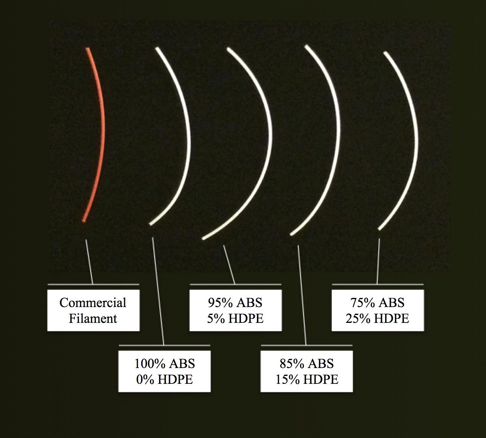

In the summer of 2015, I began an ongoing research project under the supervision of Dr. Albert Yee studying the use of recycled plastics in 3D printing. This research has so far focused on the use of recycled High Density Polyethylene (HDPE) due to its low recycling rate. When used alone in a 3D printer, HDPE presents a number of challenges. First, it is necessary to modify a 3D printer before it can accommodate HDPE. Further, because of HDPE’s unique thermal properties, delamination between print layers and warping are common. As a result, HDPE is rarely used to 3D print objects. Over the course of this project, I’ve worked to evaluate the feasibility of printing with binary blends of HDPE and Acrylonitrile Butadiene Styrene (ABS) - which is one possible solution to these issues.
Publications:
Assessing the Use of Binary Blends of Acrylonitrile Butadiene Styrene and Post-Consumer High Density Polyethylene in Fused Filament Fabrication (Accepted for Publication - IJASMM)

Filaments formed from varying binary blends of HDPE and ABS